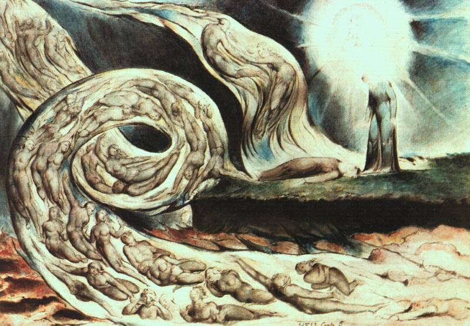
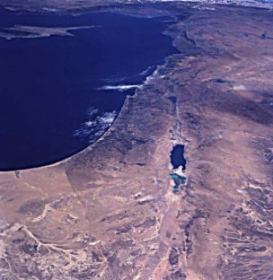
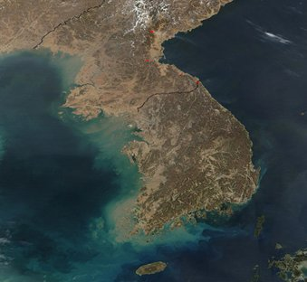
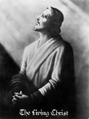
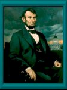

William Blake 'Whirlwind of Lovers'
Ordet "kristen" kommer av det grekiska ordet Christos (Kristus) som liksom det hebreiska Mashiah (Messias) betyder "Guds utvalde konung"
MESSIAS ÅTERKOMST
Hur kommer Kristus att återvända ?
För att förstå detta låt oss jämföra med Elias återkomst. I själva verket så är Elias återkomst det tydligaste exemplet där Gud visar hur Kristus själv skall återkomma.
Gud utlovade genom profeten Malaki att sända Elias igen innan Hen sände Kristus till jorden (Mal 4:5). Men det judiska folket trodde att densamma Elias som hade stigit upp till himmeln i en eldsvagn 900 år tidigare, nu skulle återvända på exakt samma sätt. Men i verkligheten så skedde Elias återkomst genom en man född på jorden, nämligen Johannes Döparen, tvärtemot deras förväntningar (Matt 11:14,17:13).
Man kan finna två olika profetior i Gamla Testamentet angående Messias. Profeten Daniel förutspår till exempel att Herren skall komma med himmelns skyar (Dan 7:13). Medan profeten Mika förutspår att han skall födas på jorden (Mika 5:2). Vilken av dessa båda motsatta profetior trodde det judiska folket på ?
Bland dessa båda profeter så var Daniel den mer populäre. Och även trenden i den judiska tron var att herren skulle komma direkt från himmeln. Därför var det en del som, även efter Jesus, Guds son, hade återvänt till himmeln efter korsfästelsen, påstod att Jesus som var född på jorden, därför inte kunde vara Messias. (2 Joh 1:7-8).
Men varför gav Gud denna motsatta profetia om att komma på himmelns skyar, vid sidan av profetian om att födas i köttet ? Jesus säger att, "Ingen har stigit upp till himmeln utom den som stigit ner från himmeln, Människosonen" (Joh 3:13). Han visade därmed att han kom från himmeln. Men som vi alla vet, så föddes Jesus på jorden av sin mor Maria.
Varför säger han då att han kom från himmeln ?
Ordet "himmeln" är ofta använt i Bibeln. Det används ofta som en liknelse för att väcka en känsla av heligt, gudomligt och värdefullt. På detta sätt kan vi tolka Jesu ord: "Jag föddes precis som er, men jag kommer av ett helt annat motiv och ursprung för min födelse, jag är född av Gud."
Med denna förståelse, så blir det helt klart vad profetian om att komma på himmelns skyar betyder. (Dan 7) Den verkliga betydelsen är påtaglig men inte bokstavlig. På samma sätt var Johannes Döparen, född av Zackarias familj, inte bara ett av jordens barn utan han hade en stor mission (Luk 1:15-17, 1:76).
Oavsett sättet för hans födelse, så stod Gud bakom och gav honom samma mission som Elias. Och han "kom ner" till jorden för att representera Gud själv. Från dessa händelser med Elias återkomst och Jesu ankomst, så kan man inte låta bli att tänka på Herrens återkomst.
På samma sätt innehåller Nya Testamentet inte bara profetiorna att Kristus kall komma som en domare i härlighet på himmelns skyar. Utan dom säger också att han skall komma igen på samma sätt som vid Jesu tid, vilket ju är helt motsatt den första profetian om himmelns skyar.
Vi läser i Luk 17:24-25 att Jesus förutsåg vad som skulle ske vid återkomsten, "... så skall Människosonen visa sig på sin dag. Men först måste han lida mycket och förkastas av detta släkte." Om Herren skulle komma åter, i makt och härlighet med ärkeängelns basunljud. Vem skulle då förneka och förfölja honom ?
Skulle du förfölja honom ?
Idag så blickar många trogna kristna upp mot himmeln i förväntan att Herren skall komma på himmelns skyar. Om han verkligen skulle komma på skyarna så fanns ju ingen anledning att han skulle förkastas. Men om han däremot inte kommer på ett bokstavligt moln. Utan föds i köttet precis som vid första ankomsten. Ja, då måste han först lida innan han blir igenkänd.
I Upp 12:5 står om en kvinna som födde ett barn som skall styra alla länder med en stav av järn, och hennes barn rycktes upp till Gud och hans tron. Den man som skall styra världen med en stav av järn är den återvändande Kristus. På detta sätt står det klart att han skall födas av en kvinna. När fariséerna frågade Jesus när Guds rike skulle komma, så svarade han, "Guds rike kommer inte på ett sådant sätt att man kan se det med sina ögon." (Luk 17:20). Alla kan speja upp mot himmeln, men Jesus sa att han inte skulle bli igenkänd så lätt. Varför ?
Det är eftersom han inte kommer på ett bokstavligt moln. I Luk 18:8 säger Jesus, " Jag säger er: han skall snart nog låta dem få sin rätt. Men Människosonen, skall han finna någon tro här på jorden när han kommer ?" Varför sa Jesus detta ?
Det finns många troende runt världen som gör sitt yttersta för att förbereda hans ankomst, även om deras tro inte är fullkomlig. Vem skulle misslyckas tro på Kristus om han kom på ett moln. även människor utan tro skulle känna igen och komma till honom. är det för att någon vill förhindra dom från att se honom ? Nej, verkligen inte. Svårigheter försvagar inte nödvändigtvis en människas tro. är det då därför att han skall komma på exakt samma sätt som Jesu kom?
För 2000 år sedan, då Jesus kom, så fanns det mycket tro bland folket. Dag och natt förberedde de sig i templet och lärde sig buden utantill. De ansträngde sig att hålla alla de bud och lagar som Gud sagt dem att hålla. dom offrade troget sitt tionde och de fastade. På detta sätt hade de stark tro på Gud. ändå så förstod de inte den sanna betydelsen av tro. De förbereddes ju för att känna igen Guds son, som skulle sändas till dem. Från denna ståndpunkt så kunde inte Jesus finna någon tro på jorden. På exakt samma sätt väntar idag miljontals goda kristna på Kristi återkomst. Men om Kristus kommer på samma sätt som förra gången, kommer han då att finna någon tro som gör att de kristna känner igen honom ?
För att betona detta än en gång. De slutsatser vi kan dra av Guds tidigare arbete i historien, och de Skriftens verser som vi pekat på, så kommer Kristi återkomst att ske på samma sätt som första gången. Messias skall födas av en kvinna här på jorden. Han kommer verkligen som Människoson.
Gud skapade Adam för att vara ursprunget till en ideal man och en ideal familj på jorden. Men eftersom Adam föll och började en syndfull värld, så kom Jesus den andre Adam för att upprätta den ursprungliga ideala världen. (1 Kor 15:45).
På samma sätt kommer Kristus igen som den tredje Adam för att slutgiltigt fullborda skapelsen. Därför måste han komma i köttet, för att kunna bli ursprunget till en fullkomlig individ och ideal familj, och förverkliga himmelriket på jorden, som varit Guds eviga ideal.
Om vi nu accepterar att Kristus skall återkomma i köttet. Vad betyder då "himmelns skyar" ?
Enligt Upp 17:15, så symboliserar vatten fallna eller syndfulla människor. Vad betyder då sky eller moln ? Moln är kondenserat vatten. Oavsett hur smutsigt vatten är, när det förångas till ett moln så blir det renat. På samma sätt symboliserar moln människor som är uppståndna eller pånyttfödda från de fallna människorna. Eller med andra ord de återuppståndna troende, pånyttfödda från den syndiga världen. Liknelsen att han skall komma på himmelns skyar betyder alltså att han kommer bland de helgon eller människor som Gud har förberett.
Varför sa inte Jesus detta rent ut, istället för himmelns skyar ? För det första så var det för att förhindra förvillelser från antikrist. Det var bättre att låta folk fortsätta tro att han skulle komma på molnen, tills den verkliga återkomsten. Om det stått klart att Kristus skulle födas i köttet på jorden, så kunde man inte förhindrat förvirringen från många antikristus. Men när tiden är mogen skall Gud förklara för oss.
För det andra, så var det för att uppmuntra lärjungarnas religiösa liv genom att vända deras uppmärksamhet uppåt himmeln. Angående återkomsten, så sa Jesus saker som var oklara men meningen var att uppmuntra sina anhängare att uppfylla Guds vilja så fort som möjligt. Han sa, "Ja, jag kommer snart." (Upp 22:20). I Matt 10:23 "...Sannerligen, ni hinner inte till alla städer i Israel, förrän Människosonen kommer." Också i Matt 16:28 säger han, "Sannerligen, några av dem som står här skall inte möta döden förrän de har sett Människosonen komma med sitt rike." även i Joh 21:18-22, så talar han som om han skulle komma åter i deras livstid.
Men varför lovade Jesus allt detta ?
Eftersom de första kristna trodde att Jesu återkomst var nära och att han skulle komma på himmelns moln i Guds makt och härlighet, så kunde de förbli entusiastiska och lojala och ha styrkan att uthärda motgångar och förföljelse från Romarriket. Härigenom kunde de bygga den första kristna kyrkan.
När skall Kristus komma tillbaka ?
I Matt 24:36 står, "Dagen och timmen känner ingen, inte ens himlens änglar, inte ens Sonen, ingen utom Fadern." Detta visar att det vore meningslöst i att spekulera i tiden för återkomsten. Men samma vers säger, "ingen utom Fadern vet", och i Amos 3:7 står det, "Herren gör intet utan att ha uppenbarat sitt råd för sina tjänare profeterna."
Av detta förstår vi att Gud säkert låter folk veta om Herrens återkomst genom profeterna. Av detta förstår vi att Gud säkert låter folk veta om herrens återkomst genom profeterna. Vi kan se många exempel på detta i historien. Som att Gud avslöjar floden genom Noa, förstöringen av Sodom och Gomorra avslöjas genom Lot, och Messias ankomst. Gud uppenbarade tiden för Jesu födelse för Johannes Döparens familj, och de vise männen, Simon, Anna och flera andra.
Kan någon annan tidpunkt vara viktigare för Gud än tiden för Herrens återkomst ? Hur kan Gud låta bli att avslöja när Guds son själv kommer till jorden för att uppfylla det ouppfyllda syftet med skapelsen ?
Gud som har lett historien sedan syndafallet, måste slutligen sända Messias. Gud återupprättar det förlorade syftet med skapelsen just genom att åter sända Messias.
Eftersom Guds syfte med återupprättelsen blir uppfyllt genom Messias. Så är Messias den mest värdefulla frukten av Guds arbete. Fundamentet för förberedelsen för Messias började med att samla folket ur Jakobs familj. Men detta Israels folk trodde inte på Jesus och därför utvecklade Gud den mångrasiga kristendomen som det andra Israel, bestående av alla de som trodde på Jesus.
Därför hittar vi nu Guds centrala vilja i kristendomens historia, som Gud förberedde som det andra Israel på världsplanet istället för det första förlorade Israel. Därför så måste det första Israels historia, som började med Jakob, vara identisk med det andra Israel, kristendomen, som började från Jesu tid. Ty båda var förberedda med syftet att få Messias accepterad på jorden.
Det judiska folkets historia och kristendomens historia skiljer sig ifråga om tidsperioder, yttre utseende, geografisk plats och kulturell bakgrund. men missionen hos dessa båda historieperioder är ett identiskt arv som Guds centrala historia för att sända Messias.
Båda var förberedda genom återupprättelsens princip för den slutgiltiga produkten - fundamentet för Messias.
Låt oss nu jämföra dessa båda historieperioder med utgångspunkt från återupprättelsen, och undersöka frågan om när Herrens återkomst skall ske.
Israels historia från tiden för Jakob till Jesus kan delas in i sex tidsperioder. Perioden av slaveri i Egypten, Domartiden, Förenat konungarike, Delat rike Nord - Syd, Babyloniska fångenskapen och Förberedelseperioden för Messias återkomst. I varje period ledde Gud direkt sitt arbete. Men folket kunde ändå inte uppfylla sitt ansvar. Därför först efter att ha gått igenom alla dessa tidsperioder så kunde Messias komma. Låt oss undersöka varje period noggrant och jämföra var och en med motsvarande period efter Jesu tid.
Perioden av slaveri i Egypten och förföljelsen i Romarriket.
Perioden av slaveri i Egypten började som ett resultat av Abrahams misslyckade offer. Under denna period gick Jakobs 12 söner och 70 släktingar in i Egypten, som representerade den satanska världen, och deras avkomma blev fruktansvärt förföljda av egyptierna.
Perioden av förföljelse i Romarriket började som ett resultat av Israels misstro mot Jesus. Under denna period så gick Jesu 12 lärjungar och 70 apostlar och de första kristna in i romarriket och de led fruktansvärd förföljelse.
Under perioden av slaveri i Egypten så utförde Israels utvalda folk ritualen med omskärelse. Gjorde offer och höll sabbaten. Allt detta mitt i det 400 år långa lidandet. På samma sätt så utförde de kristna under perioden av förföljelse under romarriket, de heliga sakramenten, nattvarden, dopet, offrade helgonen som levande offer och höll sabbaten.
Efter de 400 åren av slaveri i Egypten hade tagit slut, så valde Gud Moses för att han skulle lägga Farao under sig och leda israeliterna till det nya landet Kaanan. På samma sätt under slutet av perioden med förföljelse i romarriket, så påverkade Jesus andligt kejsar Konstantin att erkänna kristendomen officiellt år 313 e. Kr. och till slut förklara kristendomen nationalreligion år 392 e. Kr. På detta sätt så blev de kristna upprättade andligt in i Kanaan och ut ur den satanska världen.
Efter perioden med slaveri i Egypten, så tog Moses emot de tio budorden på berget Sinai, och därmed kärnan i Gamla Testamentet. Genom att bevara stentavlorna, tabernaklet, och förbundsarken, så kom det första Israel, den utvalda nationen, att upprätta fundamentet för att ta emot Messias. På samma sätt, efter perioden med förföljelse av de kristna, så kom det andra Israel, den nya utvalda nationen, att samla Jesu ord och apostlarnas skrifter och de utformade därmed Nya Testamentet. De etablerade kyrkor centrerade på ordet och breddade därmed fundamentet för att ta emot herrens andra ankomst.
Domartiden och perioden med kyrkopatriarker.
Domartiden är 400-årsperioden efter att israeliterna ledda av Josua och Kaleb, hade gått in i Kanaan. Under denna period så fyllde dessa domare var och en den flerfaldiga funktionen som profet, överstepräst och kung.
Perioden av kristna kyrkor under det patriarkaliska systemet, är när dom kristna leddes av kyrkopatriarker, vars uppgifter, sett från återupprättelsen, motsvarades av domarnas uppgifter.
Domarperioden är när det israeliska feodalsamhället grundades centrerat på domarna i det nya landet som givits åt varje stam.
På samma sätt så spreds evangeliet, efter kristendomens befrielse från romarriket, till de germanska stammarna, som hade flyttat till västeuropa på grund av invasionen av hunnerna (från Mongoliet). Där i det nya landet, i västeuropa, etablerade dom fundamentet för det kristna feodala samhället.
Perioden av det Enade riket och perioden av det Kristna Riket.
I början av perioden för det Enade Riket, så avslutades perioden där domarna ledde det första Israel. Domarnas mission var att både vara profeter, överste präst och konung. På samma sätt under perioden av ett Kristet Rike, den period där kyrkopatriarkerna som ledde det andra Israel avslutades, och deras mission delades upp i missionen som munk, påve och kung. Perioden av Kristet Rike började när påven Leo III krönte Karl den store till kejsare över det Frankiska Riket, på samma sätt som Israels Enade Rike började med profeten Samuel, som på Guds order smorde Saul till Israels första konung.
Perioden av delat rike i Nord och Syd och perioden av delat rike i Öst och Väst.
Det enade riket som börjat med kung Saul, fortsatte med kung David och kung Salomo. Därefter delades det i Israel som var Nordrikets tio stammar, som stod i Kains position, och Juda, Sydrikets två stammar, som stod i Abels position.
På detta sätt började det delade riket av Syd och Nord. På samma sätt så delades det Kristna Riket, vilket börjat med Karl den Store, i tre delar - Östfrankerna, Västfrankerna och Italien - på grund av grälen mellan hans tre barnbarn.
Eftersom Italien stod under Östfrankernas herravälde,så var det egentligen en uppdelning i ett Öst och ett Västrike.
Perioden av judarnas babyloniska fångenskap och perioden med påvarnas "babyloniska fångenskap".
Inte bara Nordriket Israel, som på grund av sin otro upphörde att existera vid slutet av perioden för det delade riket, utan också Sydriket, Juda, vilket stod i Abels position föll i otro. De vägrade att ångra sig och lägga fundamentet för Messias, centrerat på Guds ideal templet. Därför tillät Gud dem att bli fångar i Babylon, den satanska världen, och vara slavar i 70 år (Jer. 39:1-10, II Kon. 24-25). Under denna period så blev kung Jojakim, Daniel, medlemmar av kungafamiljen, regeringsmedlemmar och många andra judar bortförda som fångar av Nebukadnessar, Babylons konung. Senare så förstörde Persien Babylonien och kung Cyrus kungjorde ett dekret som befriade judarna. Dom återvände därefter till sitt hemland i tre omgångar under 140 år. Där upprättade dom sig som en nation centrerat på profeten Malaki för att förbereda för Messias.
Alltifrån slutet av perioden för det kristna riket, som tjänat som en förberedelse för Messias återkomst på världsplanet, tills dess att påvedömet blev korrumperat, så sände Gud många tecken, som korstågens nederlag, för att få påvarna och prästerna att ångra sig. Men dom vägrade att göra bättring och allteftersom konungarnas makt ökade, så blev det en våldsam konflikt mellan påven och kungen. På detta sätt så kom påven Bonifasius VIII i konflikt med den franske kungen Filip IV och fängslades till och med av honom en tid. En generation senare så flyttade Clemens V påvedömet från Rom till Avignon i södra Frankrike. Där levde de efterföljande påvarna som fångar under 70 år, under den franske kungens makt. Denna period kallas påvarnas babyloniska fångenskap. Efter detta så återförde påven Gregorius XI påvedömet till Rom. Men även efter detta så var det mycken förvirring och ett tag så regerade tre påvar samtidigt och andra konflikter om påvedömets auktoritet uppträdde fram till dess reformationen började.
Perioden av förberedelse för Messias och perioden av förberedelse för Messias återkomst.
Efter att ha återvänt från babyloniska fångenskapen, så uppförde Israel igen det förstörda templet, och under profeten Malakis ledning, så ångrade folket genom att följa Lagen , sina tidigare synder att ha dyrkat onda andar. Detta uppväckte en reformationsrörelse och var början på perioden av förberedelse för Messias. Efter 400 år så tog de emot Messias.
Efter att påven återvänt till Rom så började perioden av förberedelse för Messias återkomst. Det var en 400 årsperiod under vilken de medeltida kristna återupprättade trons fundament för återkomsten på världsplanet genom att påbörja reformationsrörelsen centrerat på Luther. Reformationen återuppväckte den ursprungliga kristna ivern, som då med ny hängivelse påbörjade världsevangelisationen.
Det Gamla Testamentets tidsålder var en tid då människan satte upp tron på Gud genom yttre villkor som Lagen och offren. Därför så fick det första Israel gottgjöra hela historien alltsedan Abraham, genom att uppleva lidande under sådana nationer som Persien, Grekland , Egypten, Syrien och Romariket.
Nya Testamentets tidsålder var en tidsålder där människan satte upp sin tro på Gud genom bön och tro på Jesu ord.
Därför så fick det andra Israel gå igenom inre motsättningar, under denna förberedelseperiod för Messias återkomst. På grund av humanismens uppkomst, vilken var renässansens ledande ideologi, och den därpå följande upplysningstiden, där reformationen förkunnade trosfrihet, så fick kristendomen gå igenom mycket kaos och förvirring. Under denna tid så fick kristna gå igenom gottgörelseperioden från Jesus till återkomstens Herre genom att lösa svåra inre prövningar i sina religiösa liv.
Gud förutsade Messias ankomst genom att sända profeten Malaki och genom att reformera och förnya Judendomen.
Han förberedde det första Israel för Messias ankomst. Gud förberedde också bakgrunden och omgivningarna där återupprättelsen av skapelsens syfte skulle ske. Exempelvis det stora politiska väldet som Romarriket skapade, med dess kommunikationsmöjligheter i alla riktningar och den stora kulturella sfär som formades centrerat på det hellenistiska språket och traditionen. På så sätt hade det yttre fundamentet redan skapats genom Guds plan så att när väl Messias kom, så skulle det messianska idéerna snabbt spridas från Israel till Rom och resten av världen.
På samma sätt under förberedelseperioden för Messias återkomst, så har också de yttre förutsättningarna utvecklats mycket som ett fundament för Messias återkomst.
å andra sidan så betonade den medeltida kyrkan, stimulerad av renässansen återupprättandet av den första kristna andan, där att följa Guds vilja var det enda syftet med ens existens. Reformationen började med Martin Luther, skulle befria kristna från orättfärdig påverkan, ritual och auktoritet från präster och påvedömet, och göra det möjligt för de troende att direkt relatera till Gud och Bibeln. Detta gjorde Gud i en ansträngning att förbereda det andra Israel för Messias återkomst.
Vi har i detalj återgett historien för det första och det andra Israel så som dom utvecklade sig över olika tidsperioder, på olika platser och med olika människor i huvudrollerna. Trots detta så kan vi se en häpnadsväckande likhet i tidperiodernas längd när vi ser dem utifrån Guds frälsningsplan. Eftersom de är båda är den centrala historien för att förbereda en Messias, så har båda skrivits av Gud själv.
Guds återupprättelseplan var skapad för att förbereda fundamentet för den kommande Messias, som är frukten av all mänsklig historia. Den gick igenom sex perioder efter Jakobs tid. De var perioden för slaveriet i Egypten, Domartiden, perioden av ett Enat Rike, perioden av delat Nord och Sydrike, perioden av judarnas fångenskap och deras återvändande och perioden av förberedelse för Messias ankomst, vilket tillsammans blir 1930 år.
Men när det första Israel inte uppfyllde sitt ansvar och inte trodde på Messias, så hade Gud inget val utan att förlänga
Sin återupprättelseplan. Därför efter Jesu ankomst till tiden för återkomstens Herre, så upprepades och förlängdes återupprättelsen. Därför så kan vi se att förlängningen av återupprättelseplanen gick igenom perioden av förföljelse under romarriket, perioden av kristen kyrkor under kyrkopatriarker, perioden av kristet rike, perioden av delat rike i öst och väst, påvarnas babyloniska fångenskap och deras återvändande, och perioden av förberedelse för Messias återkomst vilket också motsvarar 1930 år.
året 1930 är inte ett år som vi behöver invänta med hopp och förväntan, eftersom det redan passerat. Varför har vi då inte på jorden sett härligheten av Messias återkomst och den sista domen? Om återkomsten skall ske på skyarna så skulle Herrens härlighet redan blivit ljust lysande över hela jorden. Men som vi tidigare visat, så kommer inte Herren åter bokstavligen på skyarna. återkomsten sker genom att Messias föds på jorden i köttet. är då år 1930 det exakta år då Messias föddes? året kan inte placeras så exakt eftersom en skillnad på upp till plus minus tio år ofta kunde ses igenom återupprättelsens historia. Till exempel förföljelsen under romarriket skulle ha varat i 400 år, men för att vara exakt så varade det endast till 392 e. Kr. Därför kan inte Messias ankomst dateras till exakt 1930. För 2000 år sedan när Jesus kom, så förkunnade han inte omedelbart sig som Messias och började domen. Det fanns förvisso en osynlig, tyst, men ändå stegvis förberedelse av privat liv, och en period av officiell förkunnelse för att förbereda fundamentet att förvekliga syftet med Messias ankomst. På samma sätt så måste också återkomstens Herre gå igenom denna förberedelse efter sin födelse. Därför kan vi se att enligt återuprättelsens plan så är vi nu i förberedelsetiden för Herrens ankomst.
Var skall Kristus komma tillbaka?
Om då Kristus skall komma igen som en människa i köttet på jorden, så måste han komma till en förutbestämd plats i en förutbestämd nation. Vilken nation är detta då?Jesus sade för 2000 år sedan i Israel att han skulle komma tillbaka, men skall han komma igen till det judiska folket? I Matt.21:33-43, så visar Jesus klart, genom liknelse med vingårdsmännen, att han inte skall komma igen till landet Israel, där han dödats. Dessutom så sa han att rätten att vara den utvalda nationen skulle tas ifrån dem och ges till en nation och ett folk hos vilket det kan bära frukt för Kristi återkomst.
I denna liknelse, så är Gud vingårdsägaren. Vingården
symboliserar Guds arbete att uppfylla skapelsens syfte, vilket är
målet med frälsningen. Vingårdsmännen är den
utvalda nationen Israel. Tjänarna är profeterna. ägarens
son är Jesus. Och nationen som kan bära frukt betyder nationen
som kommer att ta emot återkomstens Herre.
Hur skall vi då förstå de Bibelns verser som talar
om Israels kommande söner? Upp. 7:4 slår fast att ur varje stam
av Israels söner så kommer 144000 att märkas med sigill
vid tiden för Kristi återkomst. Vad betyder då detta?
Ursprungligen så togs namnet Israel emot av Jakob efter att han
kämpat med ängeln vid Jabboks vadställe (1 Mos. 32:28).
Med andra ord, "Israel" betyder Guds folk som har segrat i tron och behöver
inte bokstavligen betyda Jakobs släktlinje. Matt. 3:9 och Rom. 9:6
klargör den sanna betydelsen av Israel.
Vilka är då de utvalda Israels folk efter Jesu död på
korset? De är de hängivna kristna som tror på Herren. Rom.
11:11 slår fast, "Men när de föll blev det till räddning
för hedningarna, för att detta skulle sporra deras egen avund."
Detta antyder att Guds centrum för återupprättelsearbetet
flyttats från det judiska folket. Därefter kommer han inte att
utföra sitt centrala arbete bland Abrahams ättlingar utan bland
de hängivna kristna som tagit upp Abrahams tro. Men till exakt vilket
land skall Herren återkomma?
När han tillfrågades av en lärjunge var han skulle komma
åter, så svarade Jesus symboliskt i Luk. 17:37, "Där liket
ligger, där samlas gamarna". Jesus sa inte vilket land. I Upp. 7:2-4
står det att en ängel stiger upp från öster med den
levande Gudens sigill och märker Guds utvalda tjänare på
pannorna, antalet var 144000.
Kommentar: Kyrkor i Sverige har i regel tornet i väster och det Heliga Altaret i Öster.
Är detta en Himmelsk antydan att Messias skall komma från Öster! Få att slå fast slutsatsen först,
så är nationen i öster Korea. När en
trädgårdsmästare planterar om ett träd, så gräver
han noga upp jorden och vattnar den för att förbereda för
trädet. Hur skulle Gud, som väntar frukten av den mänskliga
historien, kunna sända Messias utan förberedelse? Låt oss
ytterligare tänka på att landet som skall ta emot Herren är
Korea.
För det första så måste
landet som Messias kommer till vara ett objekt för Guds hjärta.
På detta sätt så är Korea det land som Gud
förberett. Gud har alltsedan de första förfädernas
syndafall levat i djupaste olycka och ofullständighet. Oftast så
tänker vi på Gud som en varelse i fullkomlig härlighet,
långt över oss, men detta beror på att vi inte känner
Guds hjärta. På grund av att människan, som är Hans
enda barn, föll så har Gud sörjt med en förälders
hjärta, som förlorat sitt barn, och för att rädda sitt
rebelliska barn, så letade Han genom helvetets syndfulla värld.
Därför måste den person, eller familj eller nation som
i Guds ställe kämpar på jorden mot satan inte undvika vägen
av tårar och lidande. Hur kan en trogen son, som delar smärtan
hos förälderns hjärta, leva ett bekvämt liv?
Eftersom Messias är den som kommer med Guds ångestfyllda
hjärta, så kan han inte komma bland människor som är
nöjda med sitt materiella överflöd. Eftersom nationen som
skall ta emot Messias måste bli ett objekt för Guds hjärta
- eftersom dess människor måste bli söner och döttrar
med Guds hjärta - så kan inte den nationen undvika att gå
lidandets väg.
Det första och det andra Israel var båda tvungna att gå
vägen av lidande och svårigheter. På samma sätt måste
det tredje Israel gå samma väg. En historia av extrem olycka,
speciellt de extrema exemplen av lidande i modern tid, har varit den väg
som det tredje Israel har måst gå. Men även medan nationen
har gått igenom lidande och olycka, så har Korea troget ärvt
den goda traditionen av barns respekt och lojalitet, och även på
toppen av nationell makt, aldrig provocerat eller invaderat något
grannland. Guds strategi har varit att vinna seger genom att bli attackerad,
helt motsatt viljan att invadera eller att vara aggressiv. Trots oräkneliga
främmande aggressioner, så är det ett mirakel att det koreanska
folket upprätthållit sin homogena släktlinje och sin unika
kultur. även mitt i dess långa lidandes historia så har
det värderat sin tradition som nation.
För det andra så har Korea betydelse
som en nation som bär frukterna av många religioner. Korea
har en stark dragning till religiöst liv. Det koreanska folket helgar
Gud. Flera av världens största religioner som Konfucianismen
och Buddismen, har blomstrat och burit frukt i detta land. De sista århundradena
så har kristendomen anlänt och nått den högsta höjdpunkten
av kristendom. Religion och dagligt liv har djupt blandats i en utsökt
harmoni. En nation liknande denna beskrivning är svår att finna
i världen.
Kristus kommer inte bara för att rädda kristna. Kristendomen
är visserligen Guds centrala nation, men Gud har själv skapat
och lett alla huvudreligioner för att återupprätta vars
och ens speciella region, tidsperiod och omständigheter. Därför
måste Messias, som kommer för att förverkliga det slutliga
målet för Guds frälsningsplan, också samtidigt uppfylla
målet för alla andra religioner.
Med detta synsätt så blir den nation som bär frukten
av alla huvudreligioner det land som passar för att ta emot Herren.
För det tredje, den nation där vår
Herre kommer måste vara frontlinjen mellan Gud och satan. Som
vi kan förstå från Guds ord till Adam och Eva, att inte
äta av frukten, på det att de skulle dö, så blev
den punkt där de föll, en skiljelinje mellan himmel och jord
och liv och död. Och därför delade sig också gott
och ont utifrån denna punkt.
Därför kommer vår Herre åter till samma brytpunkt,
där åter liv och död och gott och ont konfronterar varandra.
Han fortsätter därifrån för att avsluta återupprättelsen
och lösa alla våra nuvarande problem.
Guds plan att återupprätta denna världen till sin egen
sida, efter att satan tog initiativet, kan också ses i planen att
dela Kain och Abel. Delningen mellan Kains och Abels värld innan Messias
ankomst kan vi se i delningen i en kommunistisk och en demokratisk värld.
Därför kan detta kallas en horisontell utveckling av Guds vertikala
frälsningsplan igenom hela den mänskliga historien.
Därför är där vår Herre kommer där dom
två maktblocken demokrati och kommunism står emot varandra.
Det är fokus för både Guds kärlek och satans hat.
Denna konfrontationslinje är just den 38:e breddgraden på den
koreanska halvön. Därför är denna linje inte bara frontlinjen
mellan demokrati och kommunism utan också frontlinjen mellan Gud
och satan.
Eftersom nationen och människorna där Herren kommer i östern
är ett offer för återupprättelsen, så måste
också Korea som nation delas. På detta sätt är koreakriget
som bröt ut längs den 38:e breddgraden, inte bara en civil konflikt
på grund av territoriell delning. Det var en konfrontation mellan
det demokratiska och det kommunistiska blocken och dessutom mellan Gud
och satan. Det faktum att så många nationer (16 st.), utan
att ha egna intressen i området, ändå deltog och hjälpte
till i återupprättelsearbetet har gudomlig betydelse.
För det fjärde, den nation där
Herren kommer måste etablera ett nationellt fundament för återupprättelsen.
För att Korea skall bli en nation som kan ta emot Messias,
på samma sätt som det första och det andra Israel, så
måste det etablera det nationella fundamentet att separera från
satan. Israeliterna var tvungna att etablera ett fundament av separation
från satan genom att lida i slaveri i 400 år i Egypten, vilket
representerade den satanska världen. Det andra Israel måste
också etablera ett villkor av separation från satan genom att
utstå 400 års förföljelse under romarriket, som också
representerade den satanska världen.
Därför måste också det tredje Israel, Korea, utstå
lidande under en viss nation från den satanska sidan för att
separera från satan. I detta fall så var det Japan, som under
40 år gav ofattbart lidande för Korea. år 1905, så
tog Japan med våld ifrån Korea dess diplomatiska rättigheter,
och detta påbörjade en period av förlust av nationellt
självbestämmande vilket pågick till 1945, året då
Japan förlorade 2:a världskriget. Under denna period så
var det koreanska folket helt förnekat sin frihet genom Japan, och
oräkneliga människor satt i fängelse, slaktades och gick
igenom alla slags extrem förföljelse. Speciellt år 1910,
efter att Japan annekterat Korea, så blev förföljelsen
av dom kristna, som var grunden för Koreas befrielserörelse,
ojämförbar i sin grymhet. När å ena sidan kristendomen
hade frihet under Guds plan över hela jorden, så blev Koreas
lidande, där de kristna utgjorde kärnan, ett villkor av nationell
gottgörelse för att kvalificera sig som det tredje Israel.
För det femte,
denna nation måste ha profetiska vittnesbörd bland dess folk.
När Gud sänder sin älskade Son, hur kan Han göra
det i tysthet? Helt säkert skulle Han uppenbara det för alla
förberedda själar på jorden, ge dem den goda nyheten och
få dom att förbereda sig. På samma sätt som det judiska
folket genom profeterna visste att Jesus skulle komma som en konung och
rädda dom, så hade Korea under 500 år stark messiansk
tro genom en profetisk bok, Chung-Gam-Nok.
Den skrevs i en tid då Guds frälsning genom Messias inte var
omedelbart tillgänglig. Det är karaktäristiskt för
Korea att dom fått näring genom denna unika messianska tradition.
Också många andligt begåvade
präster och lekmän har tagit
emot exakta
uppenbarelser om Kristi återkomst till Korea. Dessutom så har
många djupt religiösa människor haft den gemensamma uppenbarelsen
att Korea skall bli centrum för världsfrälsningen.
Här slutar den Officiella och ursprungliga versionen av Uppenbarelsen Principerna, Citat:   "Jag har ännu mycket att säga er, men ni kan inte bära det nu. Men när han kommer,
sanningens Ande, då skall han föra er in i hela sanningen. "Innan jag påbörjade min förkunnelse, så tog jag Principerna, som var uppenbarade för
mig, inför Jesus, Budda, Confucius och Mohammed "När den Nya Tidsåldern kommer, så öppnas den östra porten,
och inte bara en man - Moon påminde mig att i Uppenbarelseboken finns en beskrivning av det Nya Jerusalem, den
Heliga staden, som kommer ner från himmeln. Detta är den tid vi alla har förberett för under de senaste 13000 åren - 1998 till
2012 - en femtonårsperiod.  Hela Introduktionen till Uppenbarelsen
Principerna på svenska (lämplig för utskrift) Examples from our
Age by Farley Jones and Carl Rapkins USA Fråga: Fanns det ett fysiskt släktskap i återkomsten? Svar: Fröken Kim: Han antyder att det finns en länk mellan det
judiska folket och det koreanska folket, men han vill inte avslöja mer. Vi
har många vanor och traditioner som mycket liknar judarnas. Det finns ett uttryck att Korea är
Österns Israel. Ref: Frågor & svar 1965
Pak Sul-nam, kom ihåg att en gång när Moon bad i kyrkan tillsammans med de andra, så började
hans huvud röra sig så våldsamt att det gjorde märken i en planka i träväggen.. De såg
detta som bevis på hans andlighet. Pastor Kim sa till sina anhängare att Moon hade djup andlig vishet.. Den 2:a Mars 1946, så kom den Helige Ande ner. Jesus visade sig, och de tog emot ständiga
uppenbarelser Han (SMM) bad med sådan intensitet och känsla att svetten och tårarna verkade strömma från
honom. Han höll andakter som vid slutet av 1947, regelbundet besöktes av fyrtio människor. Han investerade sig fullständigt för sina anhängare. Många hade blivit ledda direkt till honom genom uppenbarelser.
Ref: M. Breens biografi the Early
years 1920-53 "Han sa att återkomstens Herre skulle komma i köttet till Korea. Trots att Korea kanske är ett
obetydligt land idag, så skulle det i en nära framtid inta sin
position som viktigaste land i världen. Människor runt hela världen skulle avundas Korea, och känna
bitterhet över att de inte var födda som koreaner. Ganska
skeptiskt så frågade jag hur han kunde vara så säker på att Kristus skulle komma till Korea. Han
svarade, "år 1950 så uppenbarade sig Jesu ansikte över
himlen i Nordkorea, och detta var en mycket betydelsefull händelse." Jag hade också hört
talas om denna händelse, och jag kom ihåg vilken uppståndelse
tidningarna gjort över den. "
Ref: "Jag vittnar om det faktum att Gamla tillsammans med det Nya Testamentet inte är tillräckligt att
leva efter i den Nya Kosmiska Tidsåldern som vi gått in i.
För att bli frälsta så måste varje man, kvinna och barn påbörja sin mission innan de lämnar
detta jordeplan. Och innan de kan göra detta så måste de finna orsaken till den ursprungliga
synden och vad ursprunglig synd är. Fullkomlighet och uppståndelse kan bara uppnås genom arbete
och detta
arbete måste ske i kroppen, sanningens ande kräver det. "
Ref: aposteln Paulus
"Han kan projicera sig själv under djup meditation och bli synlig på samma sätt som Jesus har
kunnat
projicera sig och bli sedd av helgonen. Detta är alltid ett av Messias kännetecken.
Walter Voelker: Vad kan vi göra själva för att hjälpa till?
Fletcher: Lyssna på ordet och tillåt inte tradition att förblinda er för en ny
uppenbarelse." Ref: Ford-sittningen 1965
"Vid ett möte i östra USA, frågade en person honom rakt på sak: "är du Kristus?" Som svar pekade
han på en efter en i publiken samtidigt som han sa: "och så är du, och du och
också du, om du kan acceptera det." Vid ett annat tillfälle sa han på koreanska: "Detta är Guds
värld och den har inga gränser. Den är en. Era liv har universell
betydelse och jag ber er att dela min mission. Var ivriga att rädda världen och tro, känn och
lev i enlighet med den gudomliga viljan. Syftet med Kristi
återkomst är att alla en dag skall bli honom lik - som Kristus."
"...Uppenbarelsens dag, Förverkligandets dag, som markerar kristnandet av hela jorden, och den
verkliga begynnelsen av den Gyllene Tidsåldern -Kärlekens
och Sanningens Tidsålder. Dessa och andra andliga ljus uppträder i sina andliga skepnader i visioner
och drömmar hos de som är andligt öppna för dem.
Betydande bland dessa är en person som vid födelsen gavs det kosmiska namnet Sun Myung Moon. Han tog
kroppslig form i Korea år 1920,
och efter att Jesus uppenbarat sig för honom när han var 15 år, så accepterade han sin unika mission
i samband med "Kristi återkomst", och han grundade vad
han kallade "'The Unification Church of World Christianity". Efter att ha tillbringat 1 månad i
Korea som hans gäst, så kan jag själv vittna om de märkliga
uppenbarelser som kommer till de som är knutna till honom. Det verkar för mig som om tack vare att
han är inkarnerad i kroppslig form på
jorden just nu, och har en speciell förbindelse till Kristus-utstrålningen, så utgör han en
ovärderlig bro för många människor som får ta emot exceptionella och
livsförändrande upplevelser genom att uttala hans kraftfulla namn i sina meditationer. "
"Det verkar för mig inte riktigt att avvisa denna Uppenbarelsen. Med Gamaliels ord från Apg. 5:38
"om detta är människors påfund och verk försvinner det av
sig självt. Men om det är från Gud, då kan ni inte krossa dem."
"Med allt vad vi ovan sagt i åtanke, så tror vi att våra läsare är speciellt intresserade att få ta
del av en del av de anmärkningsvärda visioner och uppenbarelsen
som medier tar emot i anslutning till honom, som lever i Korea, men som
rapporterats uppenbara sig och förkunna i andlig form i många olika delar av välden.
Bevisen på detta, från våra egna undersökningar överväldigande och information om hans roll i
den Kosmiska Planen ges oberoende till medier, som inte har någon direkt koppling till
hans fysiska person eller hans rörelse. En rörelse som just nu sprider sig till många länder. "
"Från våra egna personliga möten med honom, och från den inre förståelsen, om hans kosmiska
mission, som vi tagit del av, så är vårt bestående
intryck, en som verkligen utstrålar intensiteten hos Faderns brinnande hjärta, och som vill att alla
delar hans mission - Kristusmissionen - för hela mänsklighetens
förlossning, och återupprättelsen av den fysiska världen. Vi har talat om det universella hos
Kristus i hans vädjan till alla människor just nu, vid denna unika
tidpunkt av utmaning och möjligheter. Och det är i hans eget medvetna accepterande av denna
mission som han har betydelse för världen. Det är
behovet av brådskande, omedelbar och upprätthållande aktivitet under den universella Kristus, som
kvarstår som det viktigaste och bestående minnet från våra möten med honom i Korea. " Ref: Anthony Brooke
"Under 4 år så levde jag i Seoul kyrkan,under samma tak som Sun Myung Moon.
Vid ett tillfälle återvände jag för att städa mitt eget hem under en vecka.
En dag när jag borstade ingången, så uppenbarade sig Han plötsligt i andlig form, i full
storlek framför min dörr.
Jag hade aldrig tidigare sett en sådan levande ande tidigare.
Han berättade att han vaknade varje morgon och tittade över Han-floden,
och längtade efter att jag skulle återvända.
Han saknade mig och ville att jag åter skulle leva i kyrkan, trots att jag bara varit borta en
vecka."
Ref:Young Oon Kims Vittnesbörd
ur boken Blessing Quarterly Winter 1987, sid 27
"Universal Link" är en grupp som spelar rollen att bereda vägen. "Mellan åren 1961 och 1967, så visade sig en arketypisk Kristuslik varelse,
tydligen i fast form, I Danmark "... på ett nästan dramatiskt sätt bekräftat av det som sedan hände; Ref: Universal Link Universal Link/Danmark I was guided by the spirit world to join. I was in New York and I read a book called "The Gift of
Prophecy" by Jeanne Dixon. She said a man named Joseph would work with Jesus when he returned. I
thought it was me Jag kände en vibrerande energi från allt omkring mig. Jag visste I begynnelsen av rörelsen i Rom, så hade vi många djupa andliga upplevelser. En annan natt på samma plats såg vi plötsligt ett skarpt ljussken på himlen - Ref:Italian beginning By
Dr. Martin Porter Then a blazing warmth surrounded me; someone was standing behind me. Without turning, I knew
without a shadow of a doubt that God was answering my prayers with Christ's presence, forgiving me
and showing me that He' d been there at every bad turn, trying to reach me. I'd looked for Him so
many times, and I never knew. This profound meeting point with our i Heavenly Father confirmed to me eternally that He had led me
to our True Parents, and that their course was in concert with God's will. Ref:Testimony by Mrs
Porter Jesus appeared to me again for a last time. I was in a place not unlike heaven in the spirit world.
Jesus appeared in the distance and began approaching me. At one point he stopped and gave me an
ancient salutation. As he did so,a voice spoke and all around me the atmosphere rumbled with the
sound. It was like the voice of God and it said, "This is Jesus, the Christ." Another man dressed in Oriental garb appeared beside Jesus - it was Father. They then became one
and Father went inside of Jesus, and Jesus' face became magnificently radiant as he continued to
walk towards me. He took both of my hands in his, and I felt tears running down my cheeks. Ref:Face to Face -
Experiences with Jesus by Mr. Philip K. Burley The first time I met True Father was in 1975, at Barrytown, NY. I was a new member and working in
the kitchen. At the end of one speech to the 120-day workshop participants, the staff hurriedly ran
down the hall to greet him as he passed by.
In honest humility, I stood with my head bowed and as he passed, I felt
a waterfall of spirit flow from my head to my toes. I knew that I had been changed
somehow.
October 28, 1975. After the third day of lectures my head and heart where bursting with emotions and questions. I
went to the sisters' room and covered myself under a blanket. I pictured myself as an Indian in the
middle of a teepee surrounded by nature and talking to God. I asked Him, God, what do you want me to
do now? This truth is so powerful." I was, however, having difficulty accepting that the Messiah
would be such a straightforward, serious, older Korean man. I knew the Principle had to be right,
but how could he be the one? I asked God to tell me if it was really him. "Is this korean man really your true son, the savior
of all mankind?" I wish I could fully describe to you the whole encompassing feeling I received.
I felt God's arms around me and I swear I actually heard His voice -
LOUD AND CLEAR - "Yes, this is my BELOVED SON. HE IS - HE IS THE ONE!" My ears were ringing, my whole body was shaking. It was as if I had been totally
deaf before and then when I heard those words, sound suddenly exploded - loud and clear. It is almost 24 years later and I have had many, many spiritual experiences. But I have never heard
God's voice so absolutely as that day. That was truly my spiritual BIRTH day. Muhammed Ali asked me,"Really? Is that who you're fundraising for?" and I, who was
well practiced in But in my heart, at the time, I said, "No, I'm doing this for Rev. Moon and the Unification
Church!!!" I found out later, from a sister I knew well, that Muhammed Ali really respected True Father and
our Muhammed Ali himself, when told that he was the greatest, before the
sports media was known to have said, Just think, if I'd been as honest with my mouth that day in the Rice Hotel lobby, maybe Muhammed
Ali There were numerous reports of healing at the workshop from the Water of Life and from the work of
Dae Mo Nim through Mrs. Hyo Nam Kim and her assistant, Mrs. Han. Two independent doctors had told
Dr. Joseph Sheftick his badly infected foot had bacome gangrenous and life-threatening and would
have to be amputated. He refused , however, to have it cut off, and instead participated in the
workshop, hobbling around unsteadily with the aid of a cane. By the end of the workshop his wound
was completely healed, he had thrown away his cane, and he was climbing the mountain of the Tree of
Blessing with more vigor than most of his fellow participants. The hands of elder Japanese sister had been paralyzed with painful arthritis for which she had had
to receive weekly shots. By the end of the workshop her pain had dissapeared, and she had a normal
range of motion in her hands. Her arthritis had been healed. Also, a number of serious cases of diabetes were healed, and many reported lessor health problems
that had been cleared up by the end of the workshop. Ref: page 564 in the book "40 years in America" Recent testimonies from the Spiritual World: Jesus' Message to Christians and All Reverend Sun Myung Moon is the returning Messiah for whom you have been waiting and waiting. He
inherited my mission at the age of 16. Dear Christians, are you still looking up and waiting for Christ to return on the clouds? Reverend Moon travels throughout the world on
the clouds. He is investing all of his heart and soul for the realization of world peace. Even today, although he is over 80 years old, he is fighting on the frontline. Are you going to hang him on the cross again, like the Romans who persecuted me 2,000 years ago?
Aren't you aware of the destruction of Sodom and Gomorrah? God is love. He is waiting. Please receive the Messiah who has descended in the Completed Testament Age. Do
not reject his achievements and his dispensation for the salvation of humanity. Pray with sincerity. I, Jesus, will be with you in your earnest prayers. /5 April 2001 The Buddha's Message to Buddhists and Believers in Other Religions Dear Buddhists, I am not saying that your way of life thus far has been wrong. Like Jesus, in my
time I also did my best to guide humankind in the right direction. However, with the passing of time, the tasks needed for the salvation of humankind have changed. Please study the Unification Principle. the new truth, engraft it to the truth of Buddhism. Then I am sure that a wonderful passage of
faith will open to you. In this age Reverend Sun Myung Moon is the Buddha for whom you have been waiting. Make a special condition as a Buddhist at a shrine. It is time for
you to be true to the highest standard of Buddhist integrity. Do not reject the new Buddha, who is to come in the Completed Testament Age. Do not reject his truth. Reverend Sun Myung Moon, on behalf of God, is guiding us toward an eternal passage to peace.
Through his mission he awakens our spirit. Then he is willing to be responsible for our life in
the next world. /6 April 2001 Mohammed's Message for Muslims and All People on Earth God is the Parent of humanity. If examined carefully, the original source of all doctrine or
truth is one. What religion would teach people to revere evil? Although their methods might differ, their fundamental purpose is to pursue goodness. God is the original being of
absolute goodness and love, and every religion teaches about love. Reverend Sun Myung Moon, on behalf of God, is guiding us toward an eternal passage to peace.
Through his mission he awakens our spirit. Then he is willing to be responsible for our life in
the next world. /10 April 2001 Karl Marx (1818-1883. The founder of Marxism, born of a Jewish family in Trier, Germany.) "God exists as Parent of humankind." All the thinkers in this cosmos! I, Marx, have met God. I have found that He is the Parent of
humankind. I have felt the greatness of God's love. I clearly convey to you who God is. He is the Parent of humankind. Reverend Sun Myung Moon, who is on the Earth, brought this
fact to light. The Divine Principle and Unification Thought express the original standards that open the way to salvation, so you must read them. I ask this of you seriously. I
clearly say that I apologize for my past to God and True Parents and I love them and am proud of them.
/Marx, April 18, 2002 Mao Tse Tung (1893-1976. Built the socialist society in China.) "I will thoroughly apply Godism in my life." The four great saints tried to comfort me, telling me that God, as the Parent of humankind,
forgives everything. Introducing Unification Thought and the Divine Principle, they kindly explained the mental suffering they endured until they unified in every respect. It was a
very short period, but I was treated as a man. I would like to tell clearly to all the Christians
and Communists on the Earth how I live here. I lived under an old tree, because everybody hated
me. It was the only place I could hide. I lived under the old tree avoiding the hot and cold weather. I bet you can imagine the shape I was in. I feel liberated now that I have
honestly talked to you. My friends and all people! Human beings will perish if they do not follow Godism. God exists and
the spirit world clearly exists. Reverend Moon, True Parents, who illuminated the truth that God is the Parent of humankind, please save our Communist people. Thank you for
the hard work and love you invest to save humankind by God's special order. As I am saved, I will live thoroughly according to Godism. Thank you. /Mao Tse Tung, April 20, 2002 MESSAGES FROM JOURNALISTS Hugh Love (Died 2002 at age 73. Belfast Telegraph reporter, UK.) "Jesus asked me to report on the situation here to people on earth." I, Hugh Love, would like to file a news flash to the earth from the spirit world, the world after
death. I believe the fact that I am able to do this is already shocking news. Here, I've experienced something unimaginable. I met Jesus, who is adored not only by all Christians but
also by all humanity He greeted me, "Welcome. You're new here, aren't you?" and treated me with
utmost kindness. He then continued, "As people on earth are not acquainted with the actual situation here in the
spirit world, I would like you to report it factually to them so that when they come here, their
souls may have definite knowledge of the place where they can remain with God." In order to
fulfill this request, I would like to submit as accurate a report as possible of the events taking
place here to the people on earth. I could not understand what was happening that so many people would be gathered here. As soon as
I entered the place, cameras began to flash all around. Although I had been a reporter on earth, I
was not a cameraman and therefore had never taken pictures. In one place, a person I did not
recognize kept taking pictures with a flash, and the flashes of light made me feel dizzy. How
should I report these things to people on earth? There were many people in this place, but it was
very quiet. I did not dare to breathe too loudly. This place is a lecture facility were the Divine
Principle is conveyed. It is a place where lectures are given on the Divine Principle and
Unification Thought, which God had revealed to Reverend Sun Myung Moon, the founder of the
Unification Church who is on earth. The atmosphere surrounding the lecturers and the audience was more sober than anything I had ever seen before. I was so affected by the atmosphere
that it was difficult for me to cover the event. I did not feel I could walk around as I pleased.
The lecturers explained to me that the camera flashes had been my momentary spiritual experience,
and the flashing light that I saw was a manifestation of God. I also listened to the Divine
Principle lecture, but for the most part I paid little attention to the contents. The topics and
contents of the Divine Principle lecture were unfamiliar to me. Perhaps because it has not been
long since I left the earth, I find it amaz-ing that such things as these are going on in the
spirit world. It is incredibly mysterious. Oh! How can this be? Most people in the audience looked enraptured
by the Divine Principle lecture. It appeared clear that some superhuman power was at work. Outside the lecture room, a sea of people waited their turn to enter, and the atmosphere inside
the room was solemn and sober. I am not yet ready to gather information on the profound depth of
the Divine Principle. As a reporter, I can only convey the atmosphere of this place to people on
earth. I saw Jesus sitting humbly in a respectful posture in the front row. It appeared to me that there
was something in this place that humankind has never experienced before ? some kind of secret of
Heaven. I cannot rid myself of the desire to step out of my position as a journalist and study the
Divine Principle. /Hugh Love, May 14, 2002 MESSAGES FROM PRESIDENTS 
som Sun Myung Moon utarbetade och andligt i detalj utforskade under de 7 åren 1935-42.
Därefter har alltmer Uppenbarats och förklarats genom officiella och innoficiella tal, av
Sun Myung Moon och andra,
under de år 1954-...fram tills nu (2008) som SunMyungMoon breddat sitt Messianska
fundament.
Här nedan följer några exempel på det som kommit fram både i denna Fysiska synliga och i
den Andliga (ännu så länge alltoftast) osynliga Värld.Var USA indirekt bakom Japans annektering av Korea? 1905-1945
Efter Japan vann 1904-05 års rysk-japanska kriget, sammankallade Teddy Roosevelt en
fredskonferens i augusti 1905 i Portsmouth, NH (För vilka vann han Nobels fredspris). En
bieffet av USA och Japan diplomatiska diskussioner på konferensen var en förståelse USA
skulle erkänna att Korea vara under Japans intressesfär och Japan skulle erkänna
Filippinerna vara under USA:s sfär. Månader senare, medan USA ser åt ett annat håll, blev
Korea ett japansk protektorat, och 1910, annekterar Japan formellt Korea.
Japans kolonisering av Korea var en icke-fråga för Amerika tills Pearl Harbor-attacken
inträffade. Fortfarande i Kairodeklarationen 1943, tänkte sig de krigstida allierade att
Korea skulle få sin självständighet "senare" efter en lång period av förmyndarskap. Koreaner
ansågs politiskt ofärdiga för självständighet även efter krigsslutet.
Källa: UTS
http://appliedunificationism.com/2015/08/10/how-america-can-help-reunite-the-korean-peninsula/#more-4151
är att lyssna till en av hans nu jämngamla och vuxna söner, HyungJinNim Moons tal. tworiversvip.com/
Jesus
Ty han
skall inte tala av sig själv, utan allt det han hör skall han tala, och han skall
förkunna för er vad som kommer att ske." (Joh. 16:12)
"Om ni förblir i mitt ord, är ni verkligen mina lärjungar, och ni skall förstå
sanningen,
och sanningen skall göra er fria." (Joh. 8:31-32)
Dr. SunMyungMoon
i den andliga världen, och de
bekräftade alla att den var sann!" /Absolute Values and the New World Order, 8/20/1992
Arthur Ford (världskänt medium) den andliga världen vittnar:
utan Uppenbarelse - kommer att strömma ut genom
porten!
Och det fanns en dörr åt öster och en
dörr åt söder, en åt norr och en åt väster -
och när Mästaren kommer så måste
han komma genom den östra porten.
I den heliga staden Jerusalem finns en
östra port, sedan länge förseglad och stängd.
Den kommer inte att öppnas förrän
den nye Mästaren kommer."
Edgar Cacey
Om allt vad profeterna sagt om denna period uppfylls, så kommer vi alla att förändras
till en ny mänsklighet!


Sun Myung Moon
Uppenbarelsen!
Jesus Kristus
1960
1936
sedan 2000 år...
accepterad
Andlig Messias
Fysisk & Andlig Messias!
6 Febr 2003
Låt oss vara glada och jubla
och ge honom äran.
Ty Lammets bröllop har kommit,
och hans brud har gjort sig redo.
(Upp 19:7)
Self Biography of Sun Myung Moon 2009
Traditionen
Hoon Dok Hae(= daglig textläsning)
Fysiskt släktskap mellan Jesus av Juda stam
och Återkomstens Herre, SMM från Korea
om Koreas snara roll som det nya utvalda landet.
Deras mission är att vittna om existensen av den andliga världen.
Den som kallar sig Sanning" är en ande som visar sig i namnet eller genom Jesus."
upprepade gånger för Richard Grave i England
(och därefter, som rapporterats, till andra människor)
och förkunnade i en serie av dikterade uttalanden
att en universell kosmisk operation höll
på att utföras som öppnar vägen för den Nya Tidsåldern."
just som jag var klar med att läsa ett brev och ett pressmeddelande
med Anthonys (A. Brooke) förutsägelse
att Sun Myung Moons namn skall bli känt över hela världen -
just i det ögonblicket besökte Sun Myung Moon oss här
hos mig,
genom att med hög, klar stämma, genom Kathleens mun säga 'Jag är Sun Moon'."
Universal Link/England
Dr. Joseph Sheftick 1969
I hoped to meet her to ask her about it but we never met.
She gave me a pamphlet called "Revelation for a New Age," by Dr. Anthony Brooke. I started thumbing
through it and I came across a picture of Father, the same picture in the Divine Principle book.
Then all of a sudden, he appeared and said,
"I have a mission for you to do, but you're not ready for it yet. I will prepare you for it." He
appeared to the psychic woman. I looked at his eyes in the picture and saw his name, Sun Myung
Moon, and got down on my knees and cried through the whole episode.
...When they first came down the stairs, I looked at them and I saw tremendous power. It looked like
God.
Six months later I had some doubts about my accepting the Principle. I did a 3-day fast and went to
the holy ground until
I had an answer. I took the Bible and Divine Principle and a blanket. I cried and prayed, a loud
prayer - is Sun Myung Moon the Messiah?
Is the Divine Principle true? I'm tired of praying to emptiness, I want to see you. Moses prayed and
you showed yourself to him, he saw the back of you.
If I were you, and you were me, I would come and face you, man to man, and answer my questions. I
don't want to see doves flying by or deer running up the slope.
I don't want anything except you, to see you face to face. I cried, and prayed and I waited with my
blanket.
Then I heard in my mind, "Joseph , have you read the New Testament?" I said, "Some of it." "Do you
remember all the miracles Jesus did for the people? Did it help
the faith of the people? Did you read the Old Testament? Did those miracles cause people to believe
in Moses? Did they believe because of the miracles? Why do you want a miracle?
The only way you will get your answer if the Divine Principle is true is to live the Principle in
your life. Make the Principle a living thing that no one can take from you. I really
can't meet you man to man, face to face. I made the entire universe. But when you make your heart
like mine, then our hearts will become one. Then you will know me as you desire to know me."
I cried. I picked up my blanket and DP book and the Bible and went back to the center. I didn't look
anymore from that time on for miracles. But I sought to make the Principle a part of my life.Italian beginning by Dr. Martin Porter
att på grund av sanningen, så hade något dramatiskt ändrats i mitt liv.
När jag bad och läste Principerna, så fick jag djupa insikter i dess tolkning.
När jag bad om Jesus ofullbordade mission, så uppenbarade han sig tillsammans med
Sanne Far (Sun Myung Moon) och berättade för mig att Sanne Far fullbordade Jesu mission på jorden.
Varje söndagmorgon på sommaren, så bad vi utomhus från midnatt till kl. 07.
vid en plats som kallas Monte Porzio. En speciell händelse var när kl. 03 på morgonen
ett litet omega-tecken uppenbarade sig över Rom, och allteftersom det kom emot oss så
blev det större och större tills det täckte två tredjedelar av natthimlen. Denna
fantastiska vision varade mellan tre till fyra minuter, och alla vi som bad på bergssidan såg den.
en liten ljuspunkt först, som snabbt växte till en månes storlek. Strax därefter syntes
en ljuspunkt till och en till och en till, som formade de fyra postionernas grundval på
himlen. Det sista ljusskenet blev rosa medan de andra blev som guld och grönt - det var så
vackert! Vi såg igen allesamman denna vision.Testimony by Mrs Porter
Paulette Wiesinger
Kate Tucker Moore
Paul Rosenbaum
defending my line, as I thought it was the absolute truth, and should have
been good enough for anyone to
make a "good condition" of buying, said,
"Yes, that's really who I'm doing this for."
That's what my heart said, but that's not what came out of my mouth.
movement, and often challenged our fundraisers to speak up and be proud of who we were.
"No, I am not the greatest. Reverend Moon, now, he is the greatest!!!"
would have said that to me. Instead he only took a whiff of my candles and paid five dollars.
But it sobered me up, and I have to say that from that time onward, I sought to wear my ID badge,
and I
really respected the brothers and sisters who flaunted that. Vittnesbörd om mirakulöst helande från Chung Pyung Korea
vittnesbörd om mirakulöst helande
från Chung Pyung Korea (klicka på länken)
Unika foton av
Andliga Världen från Betlehem Israel Dec 2003
You will find there a considerable number of truths that also flow through the teachings of
Buddhism. Do not be immersed in old-fashioned ideas and concepts, but by accepting
Abraham Lincoln (1861-1865)
Sixteenth President of the United States;
Preserved the Union through victory in the Civil War, and issued the Proclamation of Emancipation for the slaves
People of America, I wish for you to constantly go the way of obedience, aligned with the teachings of True Parents.
Rev. Sun Myung Moon, Mansei!
Returning Lord and Messiah, Mansei!
True Parents of humanity, Mansei!
I, Abraham Lincoln, have experienced incredibly wondrous and exciting moments, but I am saddened that there is no communication, or crossing back and forth, between the earthly and spiritual worlds. Without doubt, Rev. Sun Myung Moon is the True Parent of humanity. He shows us how to love one another and brings us together as one, with no discrimination among religions or races. He is accomplishing feats on many levels that would be utterly impossible if it were not for True Parents' teachings. People of America, do you think you can bring peace through war and military force? God has appeared before humankind as our parent. While I was listening to the Divine Principle lectures, I had a vision. In this vision, all the souls in this place, including black people, yellow people, and white people, and including Christians, Buddhists, Confucianists, and Muslims, all came together and danced for joy. Then I saw a bright light, that is, the brilliant light of God, and in that instant, I, Abraham Lincoln, wanted to also jump in among them and begin to dance.
People of America, people of the world! Black people are children of God, as are white people. At some time, all of you will have to gather here in the spirit world and walk side by side and live together. I simply came here and experienced this fact before you.
I am making a request to the people of America because I love you with an earnest heart. Rev. Sun Myung Moon has appeared as the Messiah and the True Parent of humankind. I hope that you will attend the Messiah and constantly walk the path of obedience based on True Parents' teachings. War and military force will only serve to create another human hell. Is it not time for the earthly world to declare an end to hell? A philosophy of peace for humankind comes from the Messiah. The life that you now live in the earthly world is only a fleeting and incomplete life. If you are to live in the eternal world with eternal happiness, you must above all else awaken to the truth of the Divine Principle and Unification Thought. This is my solemn request.
Rev. Sun Myung Moon, I respect you. I thank you very much for all you have done. I will attend you resolutely as the Messiah and returning Lord, tear down the walls between races and religious groups, and participate actively in True Parents' Unification Movement.
Abraham Lincoln December 9, 2002
John Fitzgerald Kennedy (1961-1963)
Thirty-fifth President of the United States
A Message to the United Nations
Those of you at the United Nations, I am John Kennedy!
I want to declare an extremely important thing to you today. The fact that Kennedy is sending a message from the spiritual world to the United Nations is something that cannot be imagined in your world, and it is very significant news. Through attending lectures of the new truth, Divine Principle and Unification Thought here in the spirit world, I have understood the direction and goal that the world must take today. I want to let the UN know the following.
The people of the world today must live as brothers and sisters, helping and depending upon each other. This is the most urgent and universal value. I want to convey to those of you at the UN this strong message showing our resolution and will, hoping that you will put it into practice. I declare the following:
- God is the parent of humankind and truly does exist.
- After people finish their life on earth, their soul continues on to live in the eternal world, namely the incorporeal world (spirit world) which is a reality.
- Rev. Sun Myung Moon is the Messiah, the Savior and the True Parent of humankind.
- All of humankind and the UN have to understand the ideology and works of Rev. Sun Myung Moon and they have to accept his leadership and guidance.
- The realization of an eternal world of peace is only possible when we put into practice the ideology of the True Parents and practice love on the supra-religious, supra-national, and supra-racial levels. A world of peace cannot be realized through wars or through force.
- The whole of creation, including humankind, exists in reciprocal relationships, namely, both internal nature and external form, and plus and minus (male and female).
- The beginning of human history went wrong and this has to be restored according to the providence of restoration.
- We have to clearly know the true identity of Satan (Lucifer) who left a huge stain on the beginning of human history.
- The gap between the rich and poor is becoming more serious on the earth. The cause of ignorance, sickness, poverty and war has to be completely eradicated.
- The Divine Principle and Unification Thought are the unique textbooks that can free humankind from suffering and unhappiness.
I sincerely hope that those of you at the UN keep these ten points in mind and in your own countries fulfill your responsibility in this age to lead humankind into a new future. Members of the United Nations, don't ask what the United Nations can do for you, ask what you can do for the realization of the eternal world of peace (the original founding purpose of the UN). I feel sorry to God that during my short term as president the UN did not fulfill its responsibility and, with a heart asking for forgiveness, I send this message.
John Kennedy July 30, 2003
- citat 18: November 5, 1951 - December 19, 2003